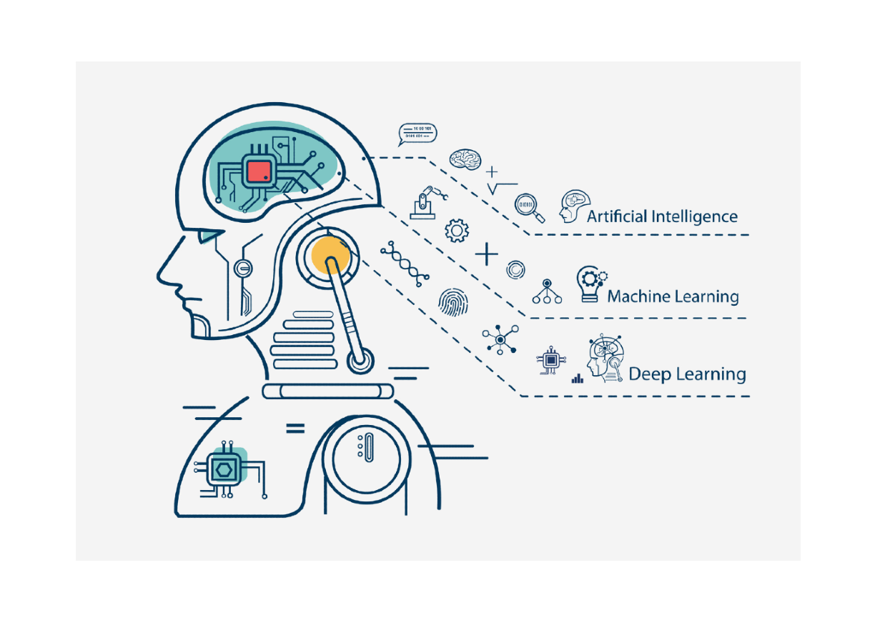

Tres etapas le dan origen a esta técnica, en auge en la actualidad.
Por un lado tenemos la corriente cibernética, que comienza en los 40 con los primeros estudios sobre aprendizaje biológico entr ellos "A logical calculus of the ideas immanent in nervous activity", desarrollado por Warren McChulloh y Walter Pitts en 1943. Esto dio lugar al desarrollo e implementación del perceptrón en 1958, permitiendo el entrenamiento de una única neurona.
En los años 80 surge la época del conexionismo, que marca un antes y un después. En 1986 surge lo que se conoce como backpropagation, el algoritmo de entrenamiento más utilizado actualmente.
El concepto de Deep Learning se construye en 2006, la tercera etapa. Geoffrey Hinton, Yoshua Bengio y Marc Aurelio Ranzato, publican entre 2006 y 2007 los artículos que impulsan el deep learning por completo, mostrando algoritmos con nuevos enfoques y más eficientes en lo que a entrenamiento se refiere.
El deep learning actual hace referencia a un tipo de algoritmo de aprendizaje automatizado basado en redes neuronales, con la capacidad de realizar predicciones más eficientes que otros algoritmos.
Sus múltiples aplicaciones en campos como la medicina, entre otros, han permitido que las grandes empresas actuales, entre ellas Google y Facebook, inviertan sus esfuerzos en esta técnica, reduciendo así los costes y tiempos de esta. Sin ir más lejos, en 2015 Google lanzó la biblioteca Tensorflow, que permite, entre otras funcionalidades, desarrollar redes neuronales a gran escala y en un menor tiempo.
Keras, biblioteca orientada al desarrollo de redes neuronales

TensorFlow, biblioteca orientada al desarrollo de Machine Learning
Deep Learning, el componente clave de la IA
Finanzas
En el mundo empresarial, el deep learning tiene la capacidad de analizar inversiones y estimar su viabilidad, el nivel de confianza de un cliente, las operaciones con mayor probabilidad de éxito, o las variaciones de la demanda en el mercado. Se pretende aplicar también en la compraventa de acciones en Bolsa, evaluando el riesgo y beneficio de estas mediante modelos de predicción.
PublicaciónRobótica
Uno de los avances más importantes es, sin duda alguna, el de las máquinas autónomas. Todos conocemos Tesla y sus vehículos, preparados para la conducción autónoma, los cohetes de SpaceX independientes en su totalidad de la interacción humana, o los avances de Amazon en los repartos por medio de drones totalmente autónomos.
PublicaciónMedicina
En el mundo de la biotecnología, los modelos de deep learning son capaces de identificar enfermedades mediante imágenes y patrones en la sangre, acelerar los diagnósticos de los pacientes y proporcionar asistencia médica en operaciones quirúrgicas, destacando también los avances en la detección precoz del cáncer de mama
Publicación